EL ESPEJO DE LA NATURALEZA
Holanda, siglo XVII
La división de Europa en campo católico y campo protestante afectó al arte incluso de pequeñas naciones como los Países Bajos. El sur de ellos, que hoy denominamos Bélgica, permanecía católico, y ya hemos visto cómo Rubens recibió innumerables encargos de iglesias, príncipes y reyes para pintar grandes lienzos que exaltasen su poder. Las provincias del norte de los Países Bajos se levantaron contra sus católicos dominadores, los españoles, y la mayoría de los habitantes de sus ricas ciudades mercantiles abrazaron el protestantismo. Los gustos de estos mercaderes protestantes de Holanda eran muy distintos de los que prevalecieron al otro lado de la barrera. Esos hombres eran algo semejantes, en cuanto a sus puntos de vista, a los puritanos ingleses: devotos, trabajadores, lentos, poco aficionados en su mayoría a la pompa exuberante de los meridionales. Aunque sus puntos de vista se dulcificaron al aumentar su seguridad y su riqueza, estos burgueses flamencos del siglo XVII nunca aceptaron por completo el estilo barroco que dominó en la Europa católica. Incluso en arquitectura prefirieron una cierta sobriedad. Cuando a mediados del siglo XVII, en el momento culminante del triunfo holandés, los ciudadanos de Amsterdam decidieron erigir una gran casa consistorial que reflejara el orgullo y la consecución del renacimiento de su nación, eligieron un modelo que, en toda su magnificencia, pareciese sencillo de líneas y sobrio de decoración (ilustración 268).
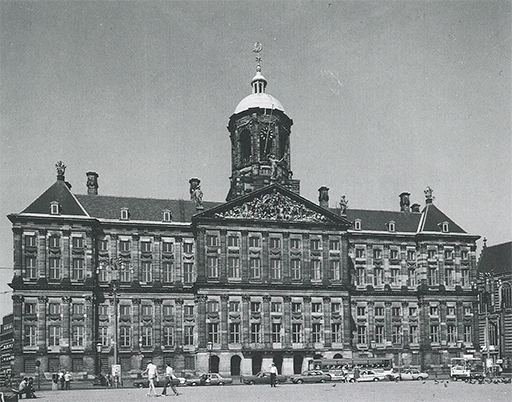
268 Jakob van Campen, Palacio Real (antiguo Ayuntamiento), Amsterdam, 1648. Ayuntamiento holandés del siglo XVII.
Hemos visto que las consecuencias de la victoria del protestantismo fueron aún más señaladas en pintura. Sabemos que la catástrofe fue tan grande que tanto en Inglaterra como en Alemania, donde las artes florecieron en tan alto grado como en otros lugares durante el medievo, la profesión de pintor o de escultor dejó de atraer a los ingenios nativos. Recordemos que en los Países Bajos, donde la tradición de la buena artesanía era tan sólida, los pintores tuvieron que ceñirse a ciertas ramas de su arte que no pudieran provocar ninguna objeción de carácter religioso.
La más importante de todas esas ramas que podían tener continuidad en la comunidad protestante fue, como Holbein advirtió en su día, la pintura de retratos. Muchos comerciantes enriquecidos desearon transmitir su semblante a la posteridad; muchos burgueses de calidad, que habían sido elegidos regidores o burgomaestres, quisieron verse retratados con la insignia de su cargo. Además, existieron muchas asociaciones locales y muchas juntas administrativas, de gran importancia en la vida de las ciudades holandesas, que siguieron la loable costumbre de poseer sus retratos de grupo destinados a las salas de juntas y lugares de reunión de sus venerables asambleas. Un artista cuyo estilo agradase a este público podía, por consiguiente, confiar en obtener seguros ingresos. Sin embargo, cuando su estilo dejase de estar de moda se encararía con la ruina.
El primer maestro destacado de la Holanda libre, Frans Hals (1580?-1666), se vio obligado a llevar una precaria existencia de esta índole. Hals perteneció a la misma generación de Rubens; sus padres habían abandonado el sur por ser protestantes, estableciéndose en la próspera ciudad holandesa de Haarlem. Sabemos poco acerca de su vida, salvo que frecuentemente le debía dinero al panadero y al zapatero; ya viejo —vivió alrededor de ochenta años—, le fue asegurada una pequeña asignación a cargo del asilo municipal, a cuya junta de gobierno había retratado algunos años atrás.
La ilustración 269, que data casi del comienzo de su oficio, muestra la brillantez y originalidad con que se enfrentaba a este tipo de tarea. Los ciudadanos de las ciudades orgullosamente independientes de los Países Bajos tenían que hacer turnos para servir en la milicia, normalmente bajo el mando de los habitantes más prósperos. Era costumbre en la ciudad de Haarlem honrar a los oficiales de estas unidades tras la finalización de sus deberes con un banquete suntuoso, y con un cuadro enorme. Desde luego, no tenía que ser fácil para un artista plasmar la fisonomía de tantos hombres dentro de un marco único sin que el resultado pareciera rígido o artificial, como había sucedido en anteriores intentos.
Hals comprendió desde el principio cómo transmitir el espíritu de alegría de la ocasión y cómo insuflar vida a un grupo tan ceremonioso sin dejar de lado el propósito de mostrar a cada uno de los doce miembros presentes tan convincentemente que nos da la sensación de haberlos conocido: desde el corpulento coronel que preside la cabecera de la mesa, levantando la copa, hasta el joven abanderado en el lado opuesto, a quien ni siquiera le han asignado un asiento, pero que mira orgullosamente fuera del cuadro como si quisiera que admirásemos su espléndido traje.
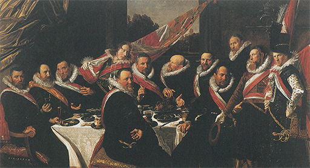
269 Frans Hals, Banquete de los oficiales de la Compañía de Milicianos de San Jorge, 1616. Óleo sobre lienzo, 175 x 324 cm; Museo Frans Hals, Haarlem.
Es posible que aún podamos contemplar mejor la maestría de Hals si miramos uno de los muchos retratos individuales que tan poco dinero le aportaron, a él y a su familia (ilustración 270). Comparado con los anteriores, éste casi parece una instantánea; diríamos que conocemos a este Pieter van den Broecke, un verdadero mercader aventurero del siglo XVII. Pensemos en el cuadro de Holbein de sir Richard Southwell (ilustración 242), pintado aún no hacía un siglo, o incluso en los retratos de Rubens, Van Dyck o Velázquez realizados en aquella misma época en la Europa católica; con toda su vivacidad y su verosimilitud, se nota que los pintores han puesto el mayor cuidado en disponer la actitud del modelo para que refleje la idea de una cuna aristocrática y unos modales refinados. Los retratos de Hals nos dan la impresión de que el pintor ha cazado a su modelo en un momento característico y lo ha fijado para siempre sobre la tela. Nos resulta difícil imaginar lo atrevidos y libres que estos cuadros debieron parecer al público de su tiempo. El mismo sistema de Frans Hals en el manejo de los colores y del pincel sugiere que apresó rápidamente una impresión fugaz. Los retratos anteriores a Hals están pintados con visible paciencia; a menudo advertimos que el modelo debió posar muchas sesiones, mientras el pintor registraba cuidadosamente detalle sobre detalle. Hals nunca dejó que se fatigara. Nos parece presenciar su ágil y diestro manejo del pincel por medio del cual evoca la imagen de los cabellos enmarañados, o de una manga fruncida, con unos cuantos toques de luz y de sombra. Naturalmente, la impresión que Hals nos produce, la sensación de una rápida imagen casual del modelo, en un movimiento y una actitud característicos, nunca podría haberse conseguido sin un esfuerzo previo muy calculado. Lo que parece al pronto un dejarse llevar por la inspiración del momento constituye, en realidad, el resultado de unos efectos previstos cuidadosamente. Aunque el retrato no es simétrico como muchos de los anteriores a Frans Hals, no está desequilibrado. Al igual que otros maestros del período barroco, Hals supo cómo conseguir la impresión de equilibrio sin aparentar seguir norma alguna.
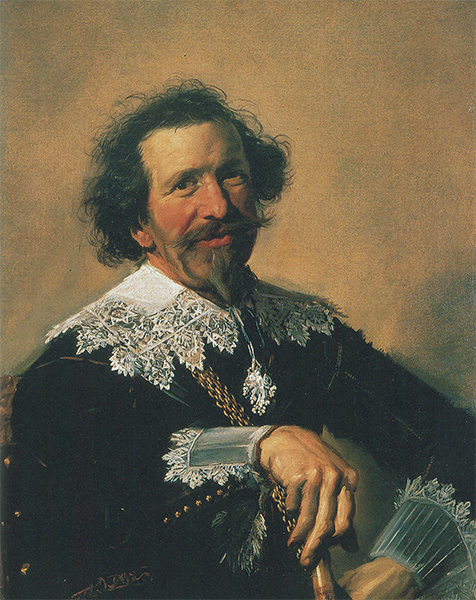
270 Frans Hals, Pieter van den Broecke, h. 1633. Óleo sobre lienzo, 71,2 x 61 cm; legado Iveagh, Kenwood, Londres.
Los pintores de la Holanda protestante que no sentían inclinación por el retrato, o no poseían talento para el mismo, tuvieron que renunciar a la idea de confiar principalmente en los encargos. A diferencia de los maestros del medievo y del Renacimiento, tuvieron que pintar primero sus cuadros y tratar de venderlos después. Ahora nos hallamos tan habituados a este estado de cosas, damos tan por supuesto que un artista es un hombre pintando continuamente en su estudio atestado de cuadros, tratando desesperadamente de venderlos, que apenas podemos imaginar el cambio que esta actitud trajo consigo. En cierto aspecto, posiblemente se sintieron contentos los artistas de quitarse de encima a los clientes, que se entrometían en su obra y que, en ocasiones, pudieron hasta desvirtuarla. Pero esta libertad se pagó cara, pues en lugar de habérselas con un cliente determinado, el artista tuvo que enfrentarse ahora con un señor más tiránico aún: el público comprador. Ya no le quedaba más que una opción: o acudir a la plaza del mercado y a la feria pública, haciendo baratillo de su mercancía, o ponerse a merced de los intermediarios, negociantes en cuadros que le aliviaban de esta carga, pero que deseaban comprar lo mejor posible para poder vender con mayor provecho. Además, la competencia era muy dura; existían muchos artistas en cada ciudad holandesa exhibiendo sus cuadros en tenderetes, y la única posibilidad para los maestros menores de adquirir reputación residía en especializarse en alguna rama o género especial de pintura. Entonces, al igual que ahora, el público quería saber lo que compraba. Una vez que un pintor se había hecho un nombre como maestro en los cuadros de batalla, eran éstos los que tenía más probabilidades de vender. Si había adquirido éxito con paisajes a la luz de la luna, lo mejor que podía hacer era no moverse de ahí y continuar pintando tales paisajes. Así ocurrió que la tendencia a la especialización, que había comenzado en los países del norte en el siglo XVI, se llevó aún a mayores extremos en el XVII. Algunos de los pintores más débiles se sintieron satisfechos de volver al mismo género de pintura una y otra vez. Ciertamente, al proceder así llevaban en ocasiones su oficio a un grado de perfección que nos obliga a admirarles. Estos especialistas lo eran de verdad; los pintores de peces sabían cómo representar los plateados matices de las escamas húmedas con tanto virtuosismo que haría enrojecer a muchos maestros de mayores vuelos; y los pintores de marinas no sólo llegaron a despuntar en la representación de olas y nubes, sino que fueron tan expertos en plasmar los barcos y sus arboladuras que sus cuadros son considerados aún como valiosos documentos históricos de la época de la expansión naval británica y holandesa. La ilustración 271 muestra un cuadro de uno de los más antiguos especialistas en marinas, Simon de Vlieger (1601-1653); demuéstrase en él cómo los artistas holandeses podían reflejar la atmósfera del mar con medios maravillosamente sencillos y modestos. Estos holandeses fueron los primeros en la historia del arte en descubrir la belleza del cielo. No necesitaron recurrir a nada dramático o impresionante para que sus cuadros estuvieran llenos de interés; simplemente representaron un aspecto del mundo tal como se les aparecía, y descubrieron que podía hacerse con él un cuadro tan atractivo e interesante como pudiera serlo cualquier ilustración de un suceso heroico o de un tema ameno.
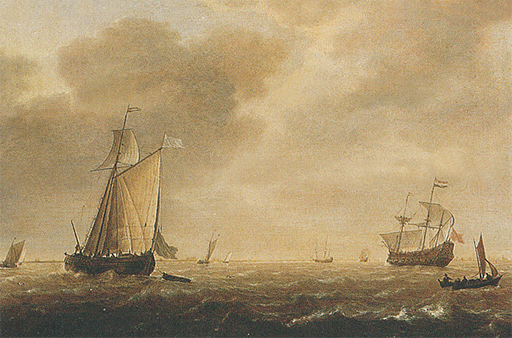
271 Simon de Vlieger, Holandeses guerreros y diversos barcos al viento, h. 1640-1645. Óleo sobre tabla, 41,2 x 54,8 cm; National Gallery, Londres.
Uno de los primeros de estos descubridores fue Jan van Goyen (1596-1656), de La Haya, que perteneció aproximadamente a la misma generación que el paisajista Claude Lorrain. Es interesante comparar uno de los famosos paisajes de este último (ilustración 255), una visión nostálgica de una tierra de belleza apacible, con el sencillo y sincero cuadro de Jan van Goyen (ilustración 272). Las diferencias son demasiado evidentes como para que sea necesario esforzarse en subrayarlas. En lugar de templos elevados, el holandés pintó un molino de viento familiar; en vez de atractivos parajes, un espacio cualquiera de su país natal; pero Van Goyen supo cómo transformar la escena corriente en una visión de sosegada belleza: transfigura los temas familiares y conduce nuestros ojos hasta la brumosa lejanía, de modo que nos parece hallarnos en una altura dominante contemplando un ámbito a la luz del atardecer. Hemos visto cómo las creaciones de Claude Lorrain llegaron a adueñarse de tal modo de la imaginación de sus admiradores en Inglaterra que éstos trataron de transformar lugares verdaderos de su país conformándolos a esas creaciones del pintor. De un paisaje o un jardín que les hacía recordar a Claude Lorrain decían que era pintoresco, esto es, semejante a una pintura, a un cuadro. Desde entonces nos hemos acostumbrado a aplicar esta palabra no sólo a los castillos en ruinas y a las puestas de sol, sino también a cosas tan sencillas como las lanchas de los pescadores y los molinos de viento; pensándolo bien, lo hacemos así porque estas cosas nos recuerdan cuadros, no de Claude Lorrain, sino de maestros como Vlieger o Van Goyen, pues fueron ellos quienes nos enseñaron a ver lo pintoresco en una escena corriente. Muchos de los que pasean por la campiña deleitándose en la contemplación pueden deber ese deleite, sin saberlo, a aquellos humildes maestros que por vez primera abrieron nuestros ojos a las sencillas bellezas naturales.
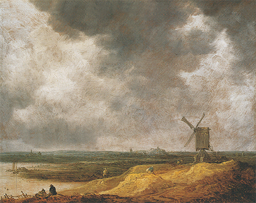
272 Jan van Goyen, Molino de viento junto a un río, 1642. Óleo sobre tabla, 25,2 x 34 cm; National Gallery, Londres.
El pintor más importante de Holanda, y uno de los mayores que han existido, fue Rembrandt van Rijn (1606-1669), que perteneció a una generación posterior a Frans Hals y Rubens y fue siete años más joven que Van Dyck y Velázquez. Rembrandt no anotó sus observaciones, al modo de Leonardo y Durero; no fue un genio admirado como Miguel Ángel, cuyos dichos se transmitieron a la posteridad; no fue un corresponsal diplomático como Rubens, quien intercambiaba ideas con los principales eruditos de su tiempo. Y sin embargo, nos parece que conociéramos a Rembrandt acaso más íntimamente que a ninguno de esos grandes maestros, porque nos dejó un asombroso registro de su vida, desde cuando era un maestro al que el éxito sonreía, elegante casi, hasta su solitaria vejez, cuando su rostro reflejó la tragedia de la bancarrota y la inquebrantable voluntad de un hombre verdaderamente grande. Estos retratos componen una autobiografía única.
Rembrandt nació en 1606, hijo de un acomodado molinero de la ciudad universitaria de Leiden. Se matriculó en la universidad, pero pronto abandonó sus estudios para hacerse pintor. Algunas de sus primeras obras fueron grandemente apreciadas por los eruditos contemporáneos, y a la edad de veinticinco años Rembrandt dejaba Leiden por el opulento centro comercial de Amsterdam; allí hizo una rápida carrera como pintor de retratos, se casó con una muchacha rica, compró una casa, coleccionó obras artísticas y curiosas y trabajó incesantemente. Cuando en 1642 murió su primera mujer, ésta le dejó una fortuna considerable; pero la popularidad de Rembrandt entre el público decreció, empezó a crearse deudas, y, catorce años después, sus acreedores vendieron su casa y subastaron su colección. Sólo la ayuda de su segunda mujer y de su hijo le salvó de la ruina total. Éstos llegaron a un arreglo mediante el cual él se convertía formalmente en empleado de su empresa de comercio de arte, y fue como tal que pintó sus últimas grandes obras maestras. Pero estos fieles compañeros murieron antes que él, y cuando su vida se extinguió en 1669, no dejó más bienes que algunos vestidos y sus utensilios de pintor. La ilustración 273 nos muestra el rostro de Rembrandt en los últimos años de su vida. No era un bello rostro, y Rembrandt no trató nunca, ciertamente, de disimular su fealdad; se contempló con absoluta sinceridad en un espejo; y a esta misma sinceridad se debe el que dejemos de preocuparnos en seguida de la belleza o del aspecto exterior. Es éste el rostro de un verdadero ser humano; no hay en él el menor rastro de pose ni de vanidad, sino solamente la penetrante mirada de un pintor que escruta sus propias facciones, siempre dispuesto a aprender más y más acerca de los secretos del rostro humano. Sin esta comprensión profunda, Rembrandt no podría haber creado sus grandes retratos, tales como el de su mecenas y amigo Jan Six, quien más tarde llegó a ser burgomaestre de Amsterdam (ilustración 274). Es casi injusto compararlo con el vívido retrato de Frans Hals, pues donde Hals nos proporciona algo parecido a una instantánea convincente, Rembrandt siempre parece mostrarnos a la persona en su totalidad. Al igual que Hals, gustaba de su virtuosismo, la pericia con que podía sugerir el lustre de un galón dorado o el juego de luz en los cuellos. Reivindicó para el artista el derecho de dar un cuadro por acabado «cuando hubiese logrado su propósito», según sus propias palabras; y de este modo, dejó la mano enguantada meramente abocetada. Pero todo esto sólo contribuye a aumentar la sensación de vida que emana de su figura. Nos da la impresión de que conocemos a este hombre. Hemos visto otros retratos de grandes maestros, memorables por el modo de sintetizar el carácter de la persona, pero hasta los más sobresalientes de ellos pueden parecernos personajes de ficción o actores en un escenario; son imponentes y convincentes, mas percibimos que sólo pueden representar un aspecto de la complejidad del ser humano. Ni siquiera Mona Lisa puede haber estado sonriendo siempre. Pero en los retratos de Rembrandt nos sentimos frente a verdaderos seres humanos, con todas sus trágicas flaquezas y todos sus sufrimientos. Sus ojos fijos y penetrantes parecen mirar dentro del corazón humano.
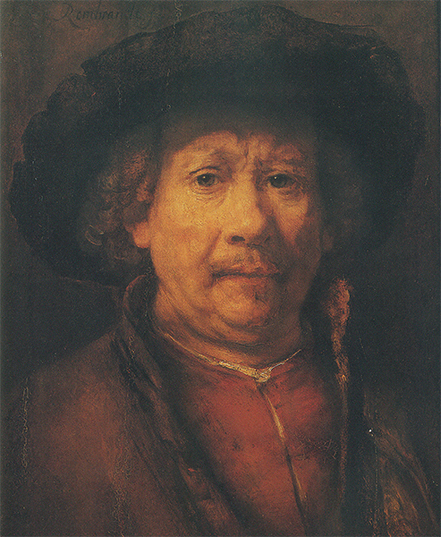
273 Rembrandt van Rijn, Autorretrato, h. 1655-1658. Óleo sobre tabla, 49,2 x 41 cm; Museo de Arte Histórico, Viena.
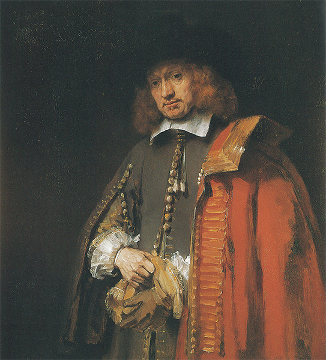
274 Rembrandt van Rijn, Jan Six, 1654. Óleo sobre lienzo, 112 x 102 cm; colección Six, Amsterdam.
Me doy cuenta de que una expresión semejante puede juzgarse sentimental, pero no conozco otra manera de describir el casi portentoso conocimiento que parece haber poseído Rembrandt de lo que los griegos denominaron «los movimientos del alma». Al igual que Shakespeare, se diría que fue capaz de introducirse bajo la piel de todos los tipos de hombres, y de saber cómo se habrían conducido en una situación determinada. Esta cualidad hace de las ilustraciones de escenas bíblicas realizadas por Rembrandt algo muy distinto de todo lo que anteriormente se había hecho. En tanto que devoto protestante, Rembrandt hubo de haber leído la Biblia una y otra vez, penetrando en el espíritu de sus episodios e intentando representar exactamente cada situación en la forma en que debió producirse y en la manera de aparecer y de reaccionar todos los personajes en tal momento. La ilustración 275 ofrece un dibujo en el que Rembrandt ilustró la parábola del siervo sin entrañas (Mateo 18, 23-35). No hace falta explicar el dibujo, pues éste lo hace por sí mismo. Vemos a un señor en el día del ajuste de cuentas, con su administrador examinando las deudas del siervo en el libro mayor. Vemos, por la actitud en que está el siervo, con su cabeza inclinada y con la mano rebuscando en el bolsillo, que no puede pagar. Las relaciones de los tres personajes entre sí, el atareado administrador, el grave señor y el siervo culpable, están captadas con sólo unos cuantos trazos de pluma.
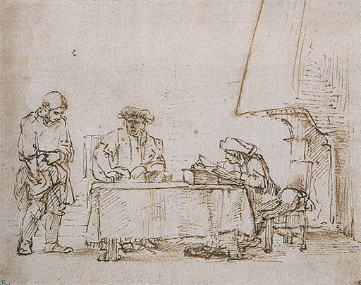
275 Rembrandt van Rijn, Parábola del siervo sin entrañas, h. 1655. Caña y tinta sepia sobre papel, 17,3 x 21,8 cm; Museo del Louvre, París.
Rembrandt apenas necesitó movimientos y actitudes para expresar el sentido íntimo de la escena; nunca es teatral. La ilustración 276 muestra uno de sus cuadros en el que representó otro tema de la Biblia, que seguramente no fue tratado nunca anteriormente: es la reconciliación entre el rey David y su hijo réprobo Absalón. Cuando Rembrandt leía la Biblia y trataba de ver a los reyes y patriarcas de Tierra Santa con los ojos de su mente, pensaba en los orientales que había visto en el activo puerto de Amsterdam. Por ello vistió a David como un turco o un indio, con un gran turbante, y dio a Absalón un alfanje por espada. Sus ojos de pintor se sentían atraídos por la magnificencia de esos trajes y por la ocasión que le proporcionaban de mostrar el juego de la luz sobre los preciados tejidos, así como el centelleo del oro y de las joyas. Podemos observar que Rembrandt fue tan gran maestro en la evocación de los efectos de esas resplandecientes calidades como Rubens o Velázquez, aunque empleó colores menos brillantes que los usados por ellos. La primera impresión que producen muchos de sus cuadros es la de una coloración parda oscura; pero estas tonalidades profundas comunican más vigor todavía a los contrastes de unos pocos matices claros y brillantes. El resultado es que la luz, en algunos cuadros de Rembrandt, parece casi cegadora; pero Rembrandt nunca empleó esos mágicos efectos de luz y sombra por sí mismos, sino para aumentar la intensidad de una escena. ¿Qué puede ser más emotivo que la actitud del joven príncipe bajo su orgulloso atavío, ocultando el rostro en el pecho de su padre, o que el rey David en su serena y penosa aceptación del sometimiento de su hijo? Aunque no vemos el rostro de Absalón, «sentimos» la expresión que ha de tener.
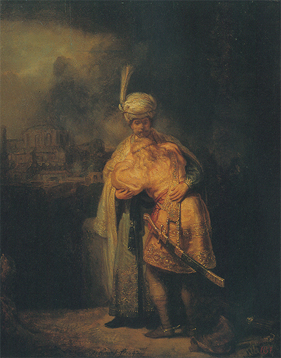
276 Rembrandt van Rijn, La reconciliación de David y Absalón, 1642. Óleo sobre tabla, 73 x 61,5 cm; Museo del Ermitage, San Petersburgo.
Al igual que Durero anteriormente, Rembrandt fue extraordinario no sólo como pintor sino también como grabador. La técnica que empleó no fue ya la del grabado en madera o en cobre, sino un procedimiento que le permitió trabajar con mayor libertad y rapidez que las consentidas por el buril. Esta técnica se denomina aguafuerte; los principios en que se basa son muy sencillos: en lugar de hacer laboriosas incisiones en la plancha, el artista cubre ésta con barniz y dibuja sobre él con una aguja. En los trazos de la aguja desaparece el barniz y la lámina queda al descubierto; y ya lo único que hay que hacer es introducir esta última en un ácido que atacará las partes libres de barniz, convirtiendo de este modo el dibujo en un aguafuerte. Después, el aguafuerte puede imprimirse como otro grabado cualquiera. El único medio de distinguir un aguafuerte de una punta seca es considerar atentamente el carácter de las líneas. Existe una diferencia visible entre el lento y laborioso trabajo del buril y el libre y desembarazado movimiento de la aguja en el aguafuerte. La ilustración 277 muestra uno de los aguafuertes de Rembrandt, otra escena bíblica: el Cristo predica entre pobres y humildes agrupados a su alrededor para oírle. Esta vez Rembrandt buscó dos modelos en su propia ciudad. Durante largo tiempo vivió en el barrio judío de Amsterdam y estudió el aspecto y los trajes de los hebreos para introducirlos en sus escenas religiosas. Aquí están ellos en tropel, de pie o sentados, unos extasiados oyendo, otros meditando las palabras del Cristo, y alguno más, como el obeso personaje del fondo, tal vez escandalizado por el ataque del Cristo contra los fariseos. Quienes están acostumbrados a los hermosos personajes del arte italiano se horrorizan cuando ven por vez primera los cuadros de Rembrandt, porque éste no parece haberse preocupado en absoluto de la belleza, y ni siquiera de haber tenido que huir de la fealdad sin ambages. En cierto sentido, esto es verdad. Al igual que otros artistas de la época, Rembrandt asimiló el mensaje de Caravaggio, cuya obra conoció a través de los holandeses que cayeron bajo su influjo. Como Caravaggio, estimó la verdad y la sinceridad por encima de la belleza y la armonía. El Cristo predicó entre pobres, hambrientos y tristes, y la pobreza, el hambre y las lágrimas no son bellas. Claro está que mucho depende de lo que nosotros consideremos belleza. Un niño a menudo encuentra más bella la bondadosa y arrugada cara de su abuela que las perfectas facciones de una estrella de cine, y ¿por qué no ha de serlo? Del mismo modo, puede decirse que el macilento anciano del rincón de la derecha del aguafuerte, agachado con una mano delante de la cara, mirando hacia arriba completamente absorto, es una de las figuras más hermosas que se hayan dibujado nunca. Pero quizá no importen demasiado las palabras que nosotros empleemos para expresar nuestra admiración.
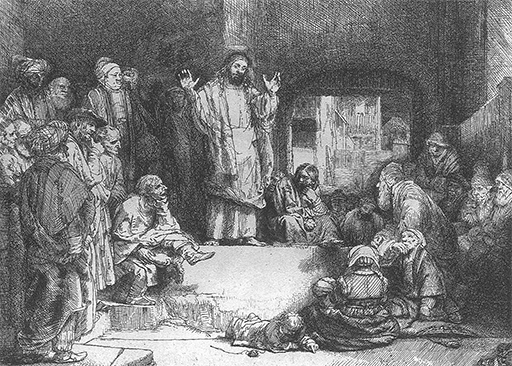
277 Rembrandt van Rijn, Cristo predicando, h. 1652. Aguafuerte, 15,5 x 20,7 cm.
El procedimiento tan poco convencional de Rembrandt nos hace a veces olvidar cuánta habilidad y sabiduría artística empleó en la distribución de sus grupos. Nada más cuidadosamente equilibrado que la multitud que forma un círculo en torno al Cristo y que, sin embargo, permanece a una respetable distancia. En este arte de distribuir una muchedumbre en grupos aparentemente casuales, pero perfectamente armónicos, Rembrandt debió mucho a la tradición del arte italiano que en modo alguno desdeñó. Nada estaría más lejos de la verdad que suponer que este gran maestro fue un rebelde aislado, cuya magnitud no fue reconocida en la Europa de su tiempo. Es cierto que su popularidad como pintor de retratos disminuyó cuando su arte se volvió más profundo y libre de compromisos. Pero cualesquiera que fueren las causas de su tragedia personal y de su hundimiento, su fama como artista fue muy grande. La verdadera tragedia, entonces como ahora, es que la fama por sí sola no es suficiente para ganarse la vida.
La figura de Rembrandt es tan importante en todas las ramas del arte holandés que ningún otro pintor de la misma época puede comparársele. Esto no quiere decir, no obstante, que no existieran muchos maestros en los Países Bajos protestantes que no merezcan ser estudiados y tenidos en cuenta por derecho propio. Muchos de ellos siguieron la tradición del arte nórdico al reproducir la vida en cuadros alegres y llenos de espontaneidad. Recordemos que esta tradición retrocede a ejemplos como las miniaturas medievales de las ilustraciones 140 y 177. Recordemos también cómo fue reemprendida por Bruegel (pag. 382, ilustración 246), quien desplegó su habilidad de pintor y su conocimiento de la naturaleza humana en escenas con gracejo de la vida campesina. El artista del siglo XVII que llevó este género a la perfección fue Jan Steen (1626-1679), yerno de Jan van Goyen. Al igual que muchos otros artistas de su época, Steen no podía vivir solamente de sus pinceles, por lo que tuvo una posada para ganar dinero. Casi podemos imaginar lo que esto último le complacería, ya que le proporcionaba ocasión de contemplar a la gente en sus algazaras y de aumentar su caudal de tipos humorísticos. La ilustración 278 muestra una alegre escena de la vida popular: un bautizo. Vemos una confortable estancia con una alcoba para el lecho en el que yace la madre, mientras parientes y amigos rodean al padre que sostiene al niño. Merece la pena observar los diversos tipos y expresiones de alegría, pero una vez que hayamos examinado todos los pormenores, no debemos dejar de admirar la destreza con que ha encajado el artista los incidentes varios dentro del cuadro. La figura del primer término, vista de espaldas, es un maravilloso trozo de pintura cuyo alegre colorido posee una viveza y una densidad que no pueden olvidarse fácilmente cuando se ha visto el original.
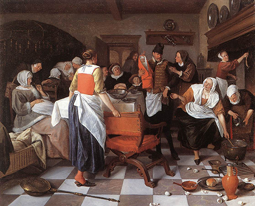
278 Jan Steen, El bautizo, 1664. Óleo sobre lienzo, 88,9 x 108,6 cm; colección Wallace, Londres.
A menudo se asocia el arte holandés del siglo XVII a esta sensación de goce vital que hallamos en los cuadros de Jan Steen; pero existieron otros artistas en Holanda que representan una actitud muy distinta, mucho más cercana al espíritu de Rembrandt. El ejemplo más sobresaliente es el de otro especialista, el pintor de paisajes Jacob van Ruisdael (1628?-1682). Ruisdael tenía aproximadamente la misma edad que Jan Steen, lo que quiere decir que perteneció a la segunda generación de grandes pintores holandeses. Cuando se formó este artista, las obras de Jan van Goyen e incluso las de Rembrandt eran famosas ya, y, por lo tanto, pudieron influir sobre sus gustos y su elección de temas. Durante la primera mitad de su vida vivió en la hermosa ciudad de Haarlem, separada del mar por una serie de dunas pobladas de árboles. Ruisdael se complació en estudiar los efectos de la luz y la sombra sobre los añosos árboles de esa comarca, especializándose más y más en las escenas de bosques pintorescos (ilustración 279). Llegó a convertirse en un maestro pintando nubes oscuras y aborrascadas, luces de atardecer, cuando crecen las sombras, precipitados arroyos y castillos en ruinas; en suma, fue él quien descubrió la poesía de los paisajes nórdicos, de la misma manera que Claude Lorrain había descubierto la belleza de los parajes italianos. Quizá ningún artista anterior a él consiguiera expresar en tan alto grado sus propios sentimientos y emociones a través de su reflejo en la naturaleza.
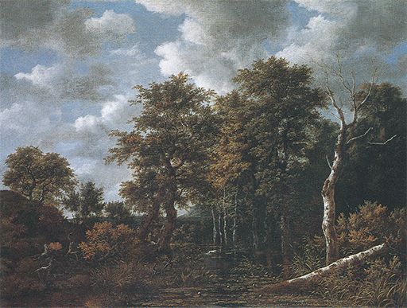
279 Jacob van Ruisdael, Estanque rodeado de árboles, h. 1665-1670. Óleo sobre lienzo, 107,5 x 143 cm; National Gallery, Londres.
Al dar a este capítulo el título de «El espejo de la naturaleza» no sólo he querido decir que el arte holandés aprendió a reproducir la naturaleza tan fielmente como un espejo. Ni el arte ni la naturaleza son tan pulidos y fríos como un cristal. La naturaleza reflejada por el arte siempre transmite el espíritu propio del artista, sus predilecciones, sus gustos y, por tanto, sus emociones. Es este hecho, por encima de todo, el que hace tan interesante la rama más especializada del arte holandés: la de las naturalezas muertas. Estas naturalezas muertas acostumbran presentar hermosas vasijas llenas de vino y frutos apetitosos, u otras golosinas depositadas de manera incitante sobre delicadas porcelanas. Eran cuadros que encajaban muy bien en un comedor, por lo que era seguro encontrar quien los adquiriese. Pero no son meras evocaciones de las delicias de la mesa; en semejantes naturalezas muertas, los artistas podían situar libremente cualquier objeto que les gustara pintar y colocarlo junto con otros sobre la mesa de acuerdo con su fantasía. Así, tales cuadros se convirtieron en un maravilloso campo de experimentación respecto a los problemas específicos de los pintores. Willem Kalf (1619-1693), por ejemplo, se complació en estudiar de qué modo se refleja y quiebra la luz sobre un cristal coloreado; estudió los contrastes y las armonías de los colores y las calidades, y trató de conseguir combinaciones siempre nuevas entre alfombras persas, porcelanas centelleantes, frutos de vivos colores y metales bruñidos (ilustración 280). Sin saberlo, estos especialistas comenzaron a revelar que el tema de un cuadro es mucho menos importante de lo que se había creído; del mismo modo que palabras triviales pueden proporcionar el texto para una bella canción, objetos vulgares podían componer un cuadro perfecto.
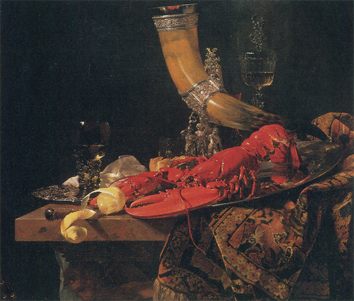
280 Willem Kalf, Naturaleza muerta con langosta, cuerno y copas (cuerno del Gremio de Arqueros de San Sebastián), h. 1653. Óleo sobre lienzo, 86,4 x 102,2 cm; National Gallery, Londres.
Esta observación puede parecer un tanto extraña cuando acabo de destacar la importancia de los temas en los cuadros de Rembrandt. Pero realmente no creo que en ello exista contradicción. Un compositor que pone música, no a un texto trivial, sino a un gran poema, se propone hacernos comprender éste tanto como su musical interpretación. Del mismo modo, el pintor que plasma una escena bíblica quiere hacernos comprender esto tanto como su manera de concebirla. Pero al igual que existe una música excelente sin palabras, existen grandes cuadros sin temas de importancia. Hacia este descubrimiento se encaminaron los artistas del siglo XVII cuando descubrieron la belleza pura del mundo visible (ilustración 4); y los especialistas holandeses que pasaron sus vidas pintando siempre el mismo tema terminaron por comprobar que el tema en sí era de importancia secundaria.
El más grande de estos maestros nació una generación después de Rembrandt. Fue Jan Vermeer van Delft (1632-1673), trabajador, al parecer, lento y esmerado, que no pintó muchas obras en el curso de su vida, y pocas de las cuales representan escenas de gran importancia. La mayoría de sus cuadros presentan sencillas figuras en la habitación de alguna casa típicamente holandesa; en algunos no aparece sino una sola figura ocupada en una sencilla tarea casera, como, por ejemplo, una mujer vertiendo leche de una vasija a otra (ilustración 281). Con Vermeer, la pintura de género pierde el último vestigio de ilustración con gracejo. Sus cuadros son realmente composiciones de naturalezas muertas y seres humanos. Es difícil explicar las razones que hacen de un cuadro tan sencillo y humilde una de las mayores obras maestras de todos los tiempos; pero pocos de los que hayan tenido la suerte de contemplar el original dejarán de convenir conmigo en que ello tiene algo de milagroso. Uno de sus rasgos prodigiosos tal vez pueda ser descrito, aunque difícilmente explicado: cómo consigue Vermeer una perfecta y paciente precisión al captar las calidades, los colores y las formas sin que nunca el cuadro parezca trabajado y duro. Como un fotógrafo que de propio intento suaviza los contrastes demasiado fuertes de su fotografía sin deshacer las formas, Vermeer dulcifica los contornos y, no obstante, conserva la impresión de solidez y firmeza. Esta rara y excepcional combinación de precisión y suavidad es la que hace inolvidables sus cuadros mejores, que nos hacen ver con nueva mirada la sosegada belleza de una escena sencilla, dándonos una idea de lo que sintió el artista cuando contempló la luz filtrándose por la ventana y avivando el color de un pedazo de tela.
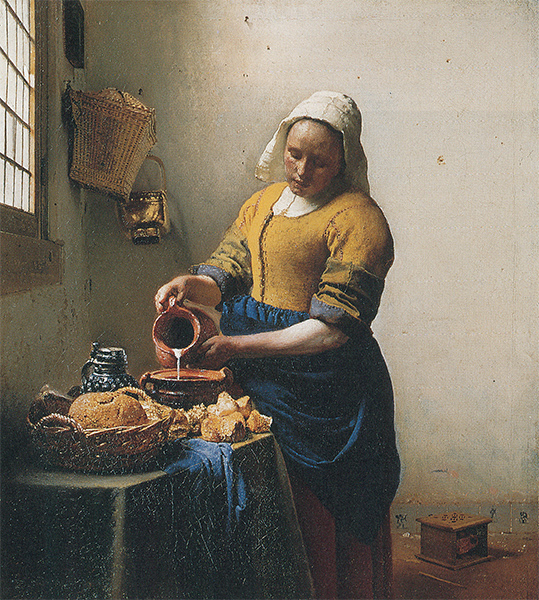
281 Jan Vermeer, La lechera, h. 1660. Óleo sobre lienzo, 45,5 x 41 cm; Rijksmuseum, Amsterdam.
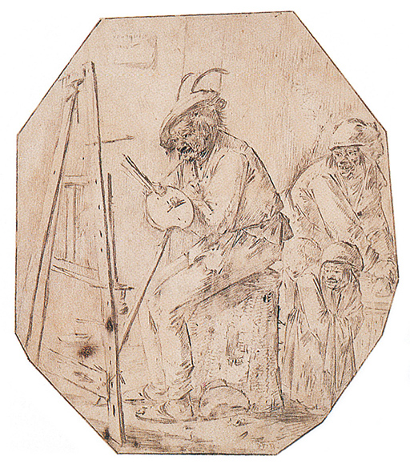
Pieter Bloot, Pintor pobre tiritando en su buhardilla, h. 1640. Dibujo; tinta negra sobre pergamino, 17,7 x 15,5 cm; Museo Británico, Londres.